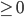
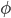
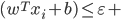
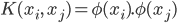

CS460 Machine Learning
CS460 Machine Learning
Prateek Kumar Murmu, 4th year Int Msc, School of Mathematical Sciences, NISER
Project Group No. 10
Stock Prediction using SVR
Problem Statement
We all know the value of money. Everyone wants to earn to live a stable life. But we also want to become rich with low efforts and great advantages. We all have some kind of wish list in our mind and we need a lot of money to fulfill those desires. Stock market is one of the best platform for this. But again there are risks which we don't want. Or do you want to take risk and lose your money? No, right? Even though there are risks one can forecast the stocks by visualising the past stock values and some statistical factors.
In this project we are trying to plots of financial data of a specific company by using tabular data provided by "yfinance" python library. Again we will create a Support Vector Regression(SVR) model to predict upcoming stock prices. This will reduce the risk factor for the investors.
Datasets and Idea
We are going to use Yahoo Finanace, Quandle and if possible some other platform from which we can get sufficient dataset for stock prediction. We will create a SVR model. We will split the data set into training and testing data. After training the model we will check the performance of the model by using different metrics(e.g mean square error, mean absolute error). We have already studied about the Support Vector Machine for Linear Regression and SVR uses same principle as SVM.
Work Division
No team is a perfect team without teamwork and coordination. We will discuss everything about our work. But roughly saying, Ajaya is going to give the 1st and 2nd Presentation, create slides and Prateek is going to present the last presentation, provide the summary of all theories for the report. Creating ML model using python and handling website for reports will come under joint task.
Mid-way work and Expecting results
Since we are taking support vector machine as our baseline, our main focus is to understand how the SVR algorithm works theoratically. After that we will try to build the model for it, test the performance of trained model, forecast the stock for a certain date by plotting a graph between "exponential moving average vs date". At the latter stage we are planning to compare the result with the result obtained by other algorithm for example Long Short-Term Memory (LSTM) model.
There are some difficulties we might face such as SVR model may not work for large data sets, choosing a good kernel and fine-tuning the hyperparameters are not easy task. So the final goal of the project to bulld a model that might overcome some of these obstacles.
References
- Ghania M.U, Awaisa M and Muzammul M, "Stock Market Prediction Using Machine Learning(ML) Algorithms", Department of Software Engineering, Government College University Faisalabad, Advances in Distributed Computing and Artificial Intelligence Journal Regular Issue, Vol. 8 N. 4, 2019. Link.
- Vanukuru K.S.R, "Stock Market Prediction Using Machine Learning", Vol. 05 Issue. 10, International Research Journal of Engineering and Technology (IRJET), Oct 2018. Link.
- Henrique B.M, Sobreiro V.A and Kimura H, Stock Price Prediction Using Support Vector Regression on Daily and Up to the Minute Prices, The Journal of Finance and Data Science, vol. 4, no. 3, pp. 183-201, 2018. Link.
Midway Report Start
1.Theoretical Analysis (Using different sources/papers)
Support Vector Regression (SVR):
A Support Vector Machine (SVM) is a discriminative classifier that is formally defined by the separating hyperplane. This algorithm outputs an optimal hyperplane which categorizes new examples. It is considered to be one of the most suitable algorithms available for time series prediction. This algorithm can be used for both classification and regression problems.
SVM involves plotting data as points in the multidimensional space. The dimensions represent the attributes (or parameters) of our given data. This algorithm sets a boundary on the dataset called hyperplane. The hyperplane separates our data points into separate classes. To find the best hyperplane (or decision boundary) is our goal. And by best we mean, the decision boundary would be associated with a maximum marginal distance.
Let µ be some unknown data point and w be the vector which is perpendicular to the hyperplane. So, now our decision rule will be,
+ b ………………………………….. (1)
Width of the margin of the hyperplane must be maximized to get a good hyperplane.
Width = [2 / ||||] ................................................... (2)
Max of Width = Max [2 / ||||] ..........................................(3)
Applying Lagrange's multiplier as,
L =  ||||² - ……………………………… (4)
||||² - ……………………………… (4)
where ,  ’s are the class classifications.
’s are the class classifications.
L = ……………………………………….. (5)
By finding the extremum of the above Lagrangian L, we get our desired result.
Now our decision rule will be,
……………………………………… (6)
If we get a dataset which is non-linear in the current dimensional space, we can map them to a new space with greater dimension than before.
The hyperplane in our new dimension is given by the equation,
………………………………. (7)
And the hyperplane must satisfy,
for positive samples, i.e. when  ………………………..(8)
………………………..(8)
for the negative samples, i.e. when ……………….(9)
Here  maps our independent values to the new space with greater dimension in which our dataset turns to be linearly separable.
To summarize the above two inequalities we can write,
……………………………………………………. (10)
In real world problems it can happen that even in the new space the dataset is not linearly separable. To counter this problem we introduce a variable, as a tolerance margin in the classification thresholds, making the classifier more flexible in accepting possible errors. Now the hyperplane condition in Eq. (10) becomes Eq. (11), and the problem of finding the optimal hyperplane becomes a convex optimization problem given by Eq. (12). In this equation, C is the adjustment parameter for the edge of the hyperplane with the smallest possible misclassification, under the conditions of Eq. (11).
 ………………………………. (11)
………………………………. (11)
………………………………….... (12)
Now we come to SVR. It uses principles similar to SVM, but the response variable is a continuous value . Instead of seeking for the hyperplane in Eq. (11), SVR seeks the linear regression function, given by Eq. (13). To achieve this, a threshold error ε is defined to be minimized in the expression in Equation (14). This expression is called the ε-insensitivity loss error function. The SVR regression process therefore seeks to minimize ε in Eq. (14) and  in the expression of R, defined in Eq. (15).
in the expression of R, defined in Eq. (15).
……………………………………………… (13)
……. (14)
……………………………………. (15)
Again introducing the tolerance variables here as well, defining as the value in excess of ε and to limit the value to the regression target. Thus, the minimization of Eq. (15) becomes Eq. (16), under the conditions of Eqs. (17) and (18) for and .
+) ........................................................... (16)
…………………………………………… (17)
 ………………………………………….. (18)
Now let’s focus on the Kernel Function now. It is,
 ………………………………….. (19)
So, it is the dot product of the images of the vectors in our current space.
The perks of kernels is that we can get the dot products of the images without even knowing anything about the map .
There are mainly four types of kernel function in the SVM algorithm, namely, linear, radial basis function (RBF) Eq.(20), polynomial Eq.(21) and sigmoid function Eq.(22). In this project we have used RBF, polynomial and sigmoid functions and have compared the results.
where gamma is a parameter ……………………….. (20)
where d and r are parameters …………………….. (21)
where  and r are parameters ……………... (22)
and r are parameters ……………... (22)
In the RBF kernel, is the squared Euclidean distance between two feature vector and is a parameter which determines how much influence a single training data point has. RBF kernel is a function whose value depends on the distance from the origin or from some point.
In the polynomial kernel, d is the degree of the kernel and r is a constant term. Here, we simply calculate the dot product by increasing the power of the kernel.
An interesting fact to be noted is that the shape of the kernel function directly influences the values obtained by the SVR. Similarly, the constant c in Eq. (16) and the parameters and d in Eqs. (21) and (22) should be optimized.
2.Experiment and Results:
- Data Set: We have taken the Uniqlo (Fast Retailing ) in Tokyo Stock Exchange dataset available on Kaggle. The dataset contains data of 5 years i.e 2012-2016. This is how our data looks like.
- Preprocessing Data and Data Analysis: We only need to predict the ‘Close Price’ with respect to Date. After checking whether there exists a null value in the date column or not, we changed the data type of the Date column from string to date-time. Then we compared the month-wise opening and closing price of actual data.
Using plotly we got a figure of opening and close price of actual data vs Date.
- Close Price Prediction: We made a separate data frame with Date and Close as columns and took a copy of the same for further use. After normalizing the feature(close value) into range 0 to 1, we split the data into 70% training data and 30% testing data. Using different kernels (RBF, Sigmoid, Polynomial(degree=2)) of SVR from Sci-kit Learn we got the following graphs as result.
After getting the model we will predict the close price using different kernels. Here it is shown for the next 30 days.
Now, the question is which kernel we should use for better result. For this we will use metrics like RMSE or MSE and R-squared measure. MSE of the predicted values is calculated for each kernel function, and is compared with each other.
MSE =
Where, ’s are real sample values.
’s are predicted values from our SVR model.
T is the total number of test samples.
Now let’s look into a statistical measure called the R-squared.
It represents the proportion of the variance for a dependent variable that's explained by an independent variable or variables in a regression model. We have calculated the R^2 value(R) for each kernel. We know that for R=1, it is considered as a best model and for R=0 or < 0 ; it is considered as a worse model.
Considering the above two measures, we can clearly see that ‘Sigmoid’ is a very bad kernel option for our dataset. That’s why we haven’t considered it for the ‘30 days prediction’.
Now, comparing the above statistical measures for RBF and Polynomial kernel, we can conclude that for our experiment RBF kernel is the best model.
3.Reference:
- Vanukuru K.S.R, "Stock Market Prediction Using Machine Learning", Vol. 05 Issue. 10, International Research Journal of Engineering and Technology (IRJET), Oct 2018. Link.
- Henrique B.M, Sobreiro V.A and Kimura H, Stock Price Prediction Using Support Vector Regression on Daily and Up to the Minute Prices, The Journal of Finance and Data Science, vol. 4, no. 3, pp. 183-201, 2018. Link.
- Nanda M.A, Seminar K.B, Nandika D and Maddu A, “A Comparison Study of Kernel Functions in the Support Vector Machine and Its Application for Termite Detection”, Information (Switzerland), 9(1), 5, Jan 2018. Link.